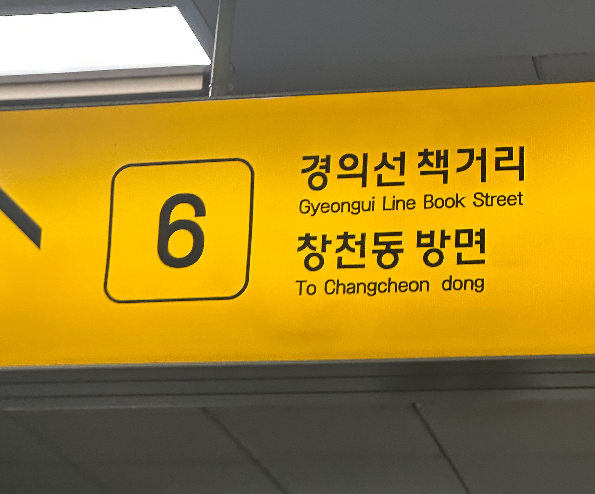
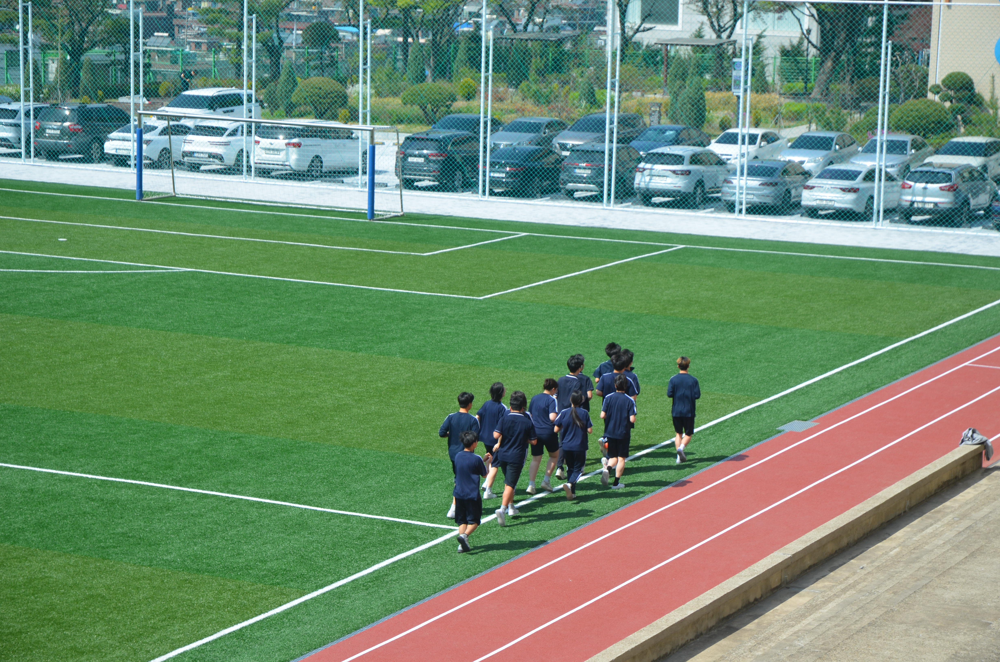
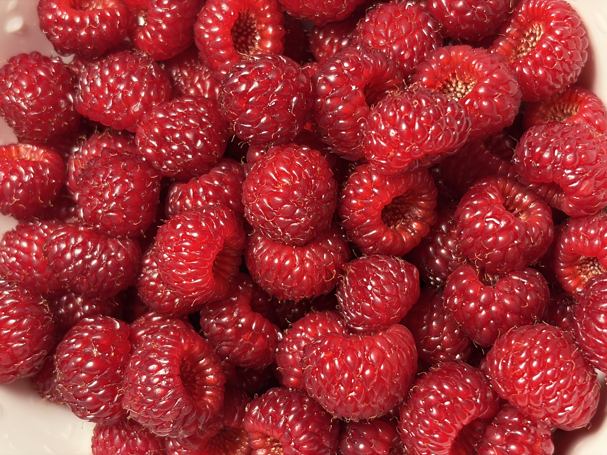
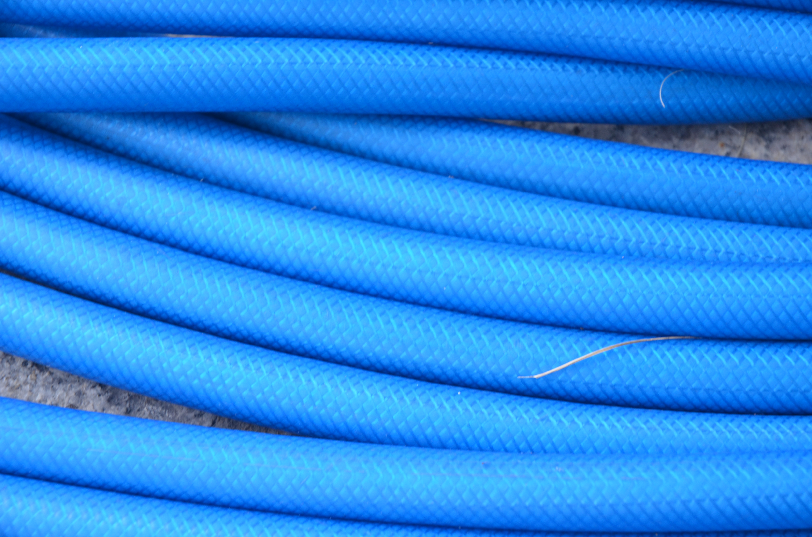
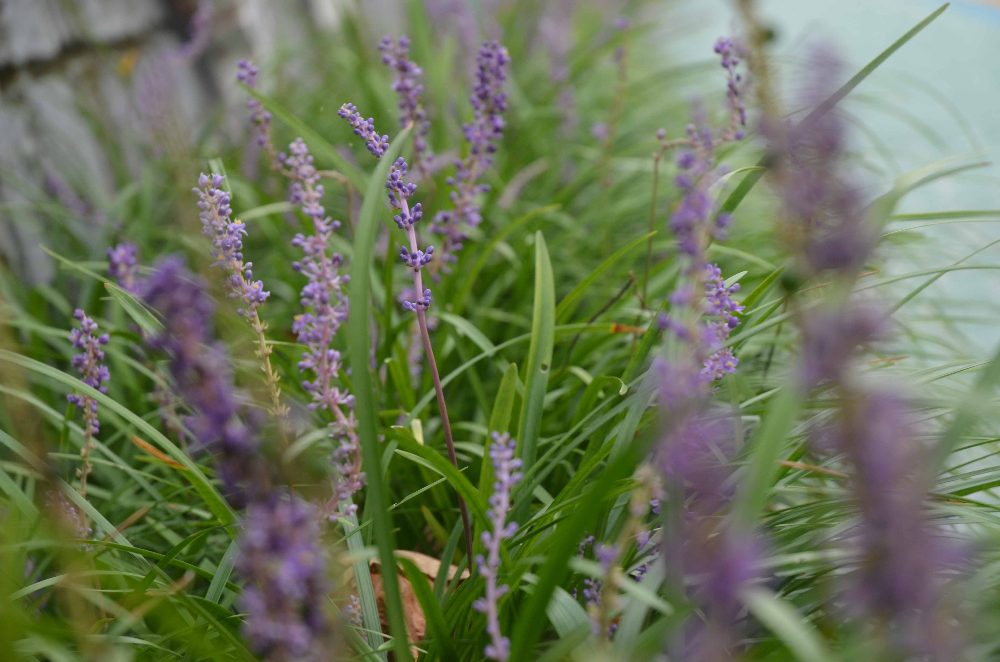
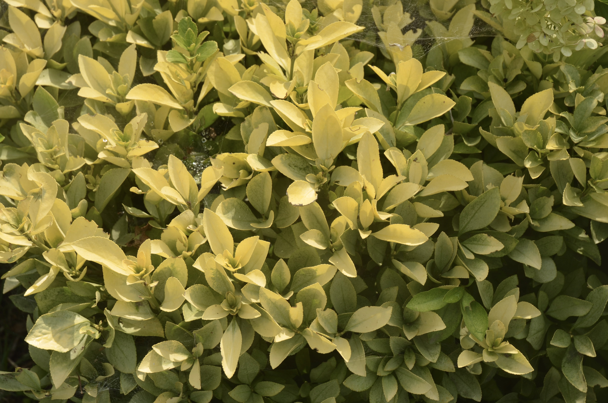
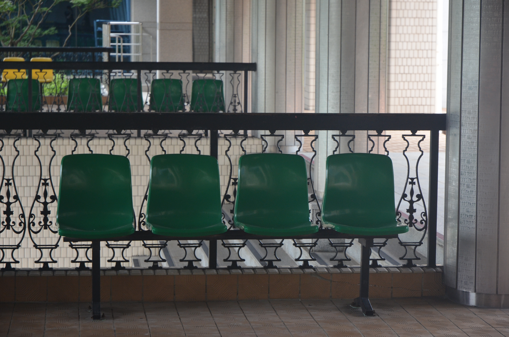

6월
7월
8월
9월
10월
안녕하세요! 사진반에서 활동하고 있는 백지현입니다. 저희가 준비한 사진들을 즐겁게 감상해 주셨으면 좋겠습니다. 감사합니다!
백지현

안녕하세요! 열심히 찍었어요 예쁘게 봐주세요
맹제우
안녕하세요. 열심히 찍었으니 예쁘게 봐주세요. 감사합니다.
유의인


안녕하세요! 이쁘게 봐주세요! 감사합니다!
민서연
안녕하세요! 잠시 사진 구경하며 쉬는 시간이 되면 좋겠습니다! 감사합니다.
박상현


안녕하세요! 이창섭입니다. 열심히 찍었으니까 보고 또보고 또보세요. 감사합니다
이창섭
안녕하세요 평범한 일상 속에서도 특별한 순간을 발견하고, 사진으로 그 순간들을 담아왔습니다. 저희의 사진을 보시면서 잠시나마 즐거운 시간을 보내셨으면 좋겠습니다.
황수미


안녕하세요 홍성재입니다. 제 사진 잘 감상해주시면 감사하겠습니다.
홍성재
전시 안내
전시명월간팔레트
일시11월 25일
장소4층
무한상상카페
무한상상카페
참여학생 8명과
선생님
선생님
굿즈포토 굿즈,
시크릿 포토 카드
시크릿 포토 카드
함께한 사람들
- 백지현
- 유의인
- 박상현
- 황수미
- 맹제우
- 민서연
- 이창섭
- 홍성재
- 이하얀 선생님